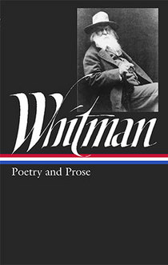

1:18 · 1 OPERA
What will your verse be?
Il filo del discorso
Il parlante difende la poesia come espressione della passione umana e come parte di ciò che dà valore alla vita. Distingue le professioni necessarie a sostenerla dalla bellezza, dall’amore e dall’esperienza poetica che la rendono desiderabile. Introduce quindi Whitman e recita una selezione di O Me! O Life!, soffermandosi sulla possibilità che ciascuno contribuisca alla vita con un proprio verso. La domanda conclusiva invita l’ascoltatore a interrogarsi sul proprio contributo.
I libri nel discorso

O Me! O Life!
Copertina: Library of America · Poetry & Prose, a cura di Justin Kaplan
Copertina della raccolta Poetry & Prose. Il volume contiene O Me! O Life! nella sezione By the Roadside dell’edizione 1891–92 di Leaves of Grass, come conferma l’indice dell’editore. Non è una pubblicazione autonoma del componimento e non identifica l’edizione del video.
Il parlante annuncia una citazione di Whitman a 29,17 secondi e recita l’incipit e la risposta conclusiva del poema.
Passaggio 0:32 ↗ · Fonti e libro ↗